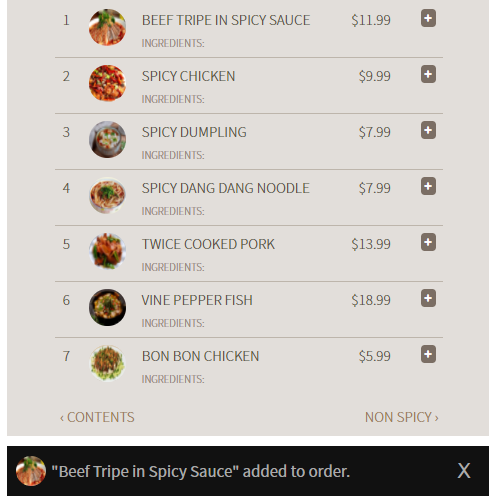
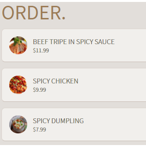
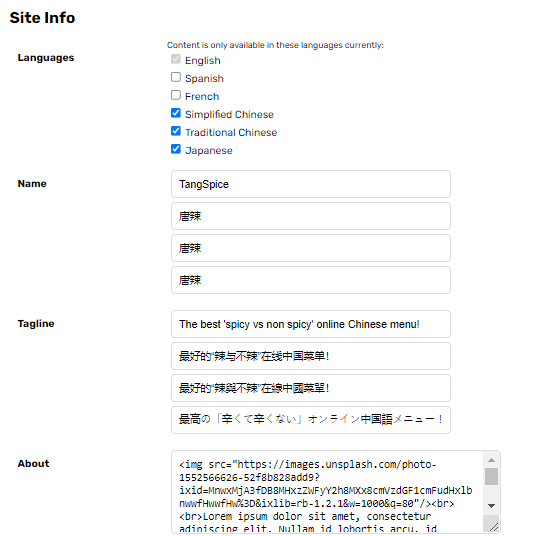
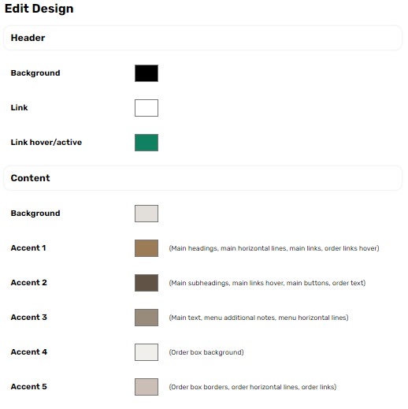
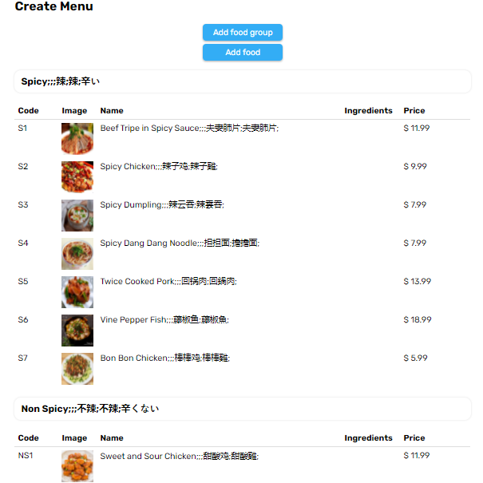
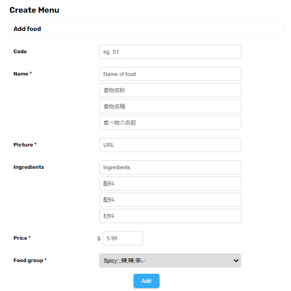
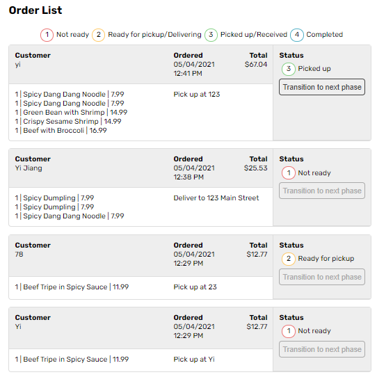
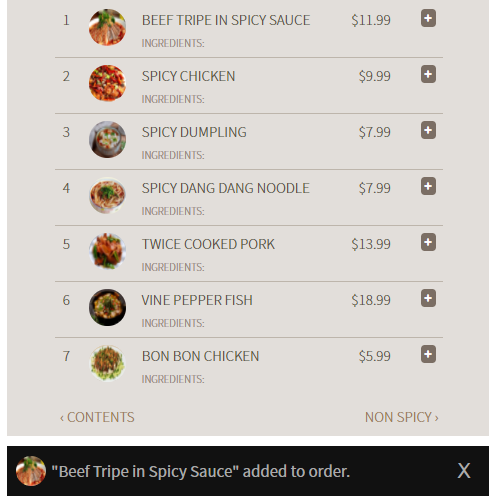
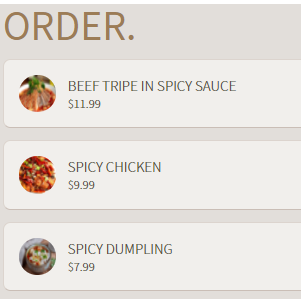
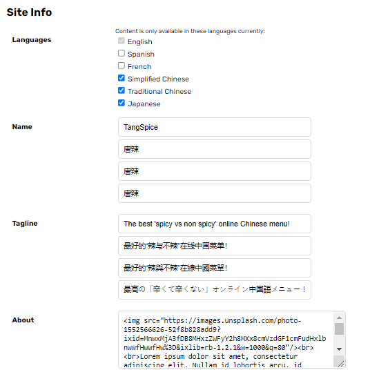
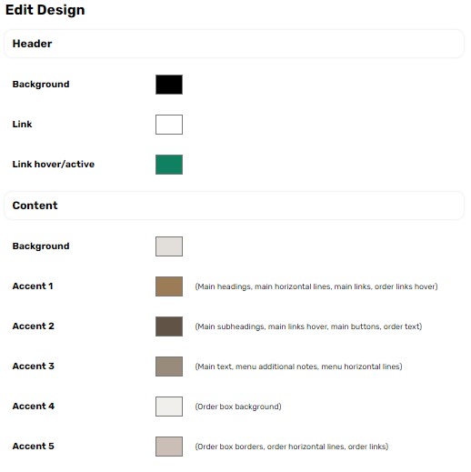
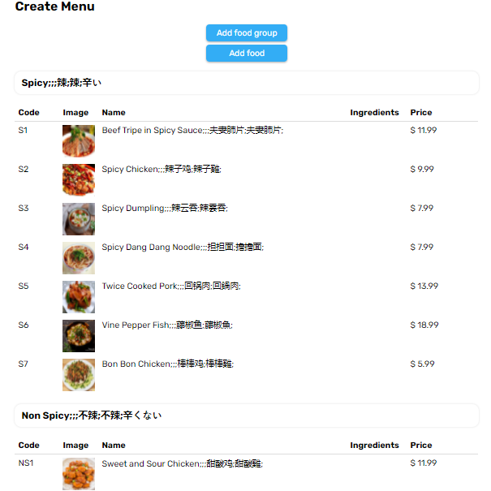
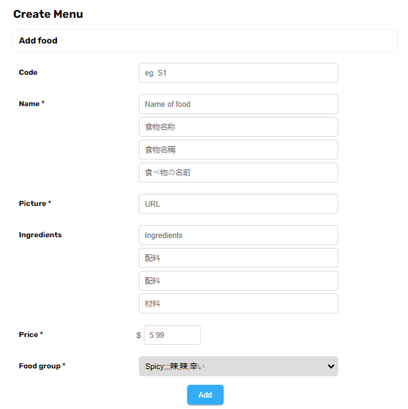
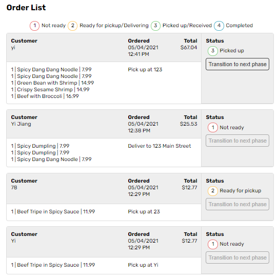
This website has predefined language UI descriptions for a few languages such as English, Spanish, French, Simplified and Traditional Chinese, and Japanese. For the current restaurant we are working with for the project, it selected 4 of the languages. The navigation links contain a language dropdown that users can toggle the language of the website. When toggled to another language, the dropdown contents will render the correct language names in the respective language.
The two big characters indicate the main food groups of the restaurant, which is used to separate the different sections of the menu. It reads 'spicy' and 'non spicy'. Clicking on the respective link will redirect the user to the respective section on the menu.
At the bottom left, I have provided the designs of the plus and minus buttons, which are the main functionalities for the user to add items to their order or remove from their order. The darker one is the hovered state.
The footer is shown on the bottom center. The bottom right is a hovered button located at the bottom of the menu pages to quickly lead the user to the checkout page when they have at least 1 item on their order.